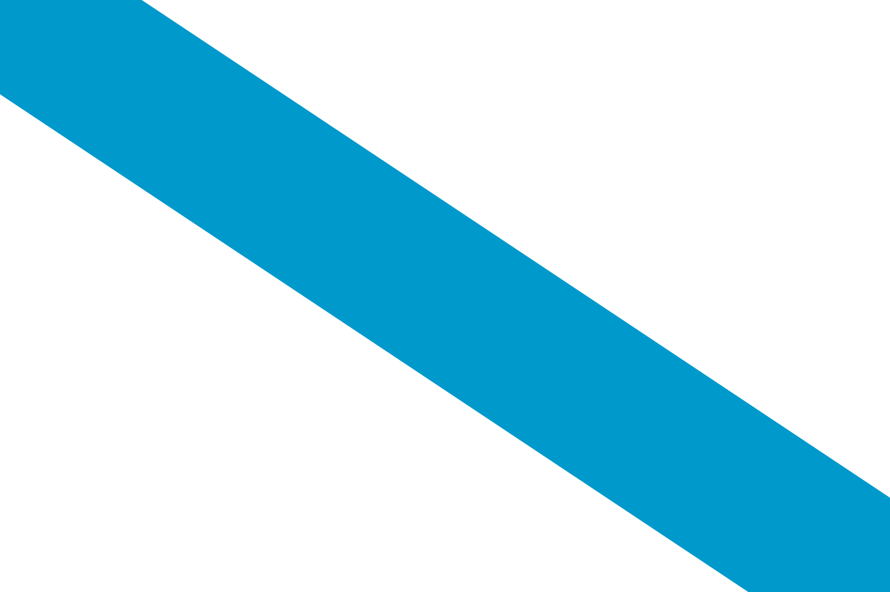
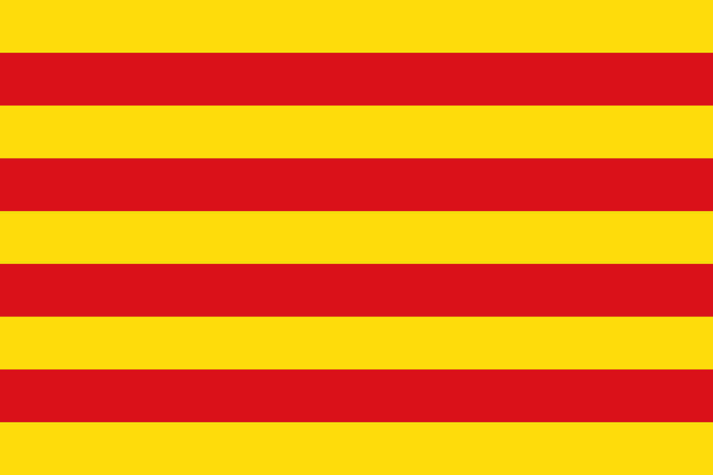

Selecciona idioma:
 
Archery Tools
Selecciona unha ferramenta para túa necesidade.
Ferramentas Dispoñibles
Cronómetro
Cálculo FOC
Conversor de Pulgadas a Cm
Conversor de Libras a Kg
Ferramentas Externas
Xerador de Dianas a distintas distancias
Simulación en interiores de 70 m